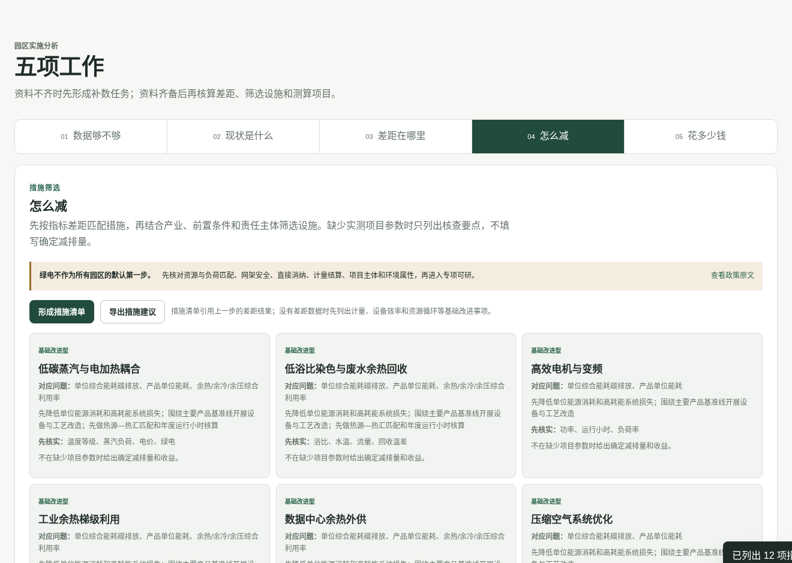
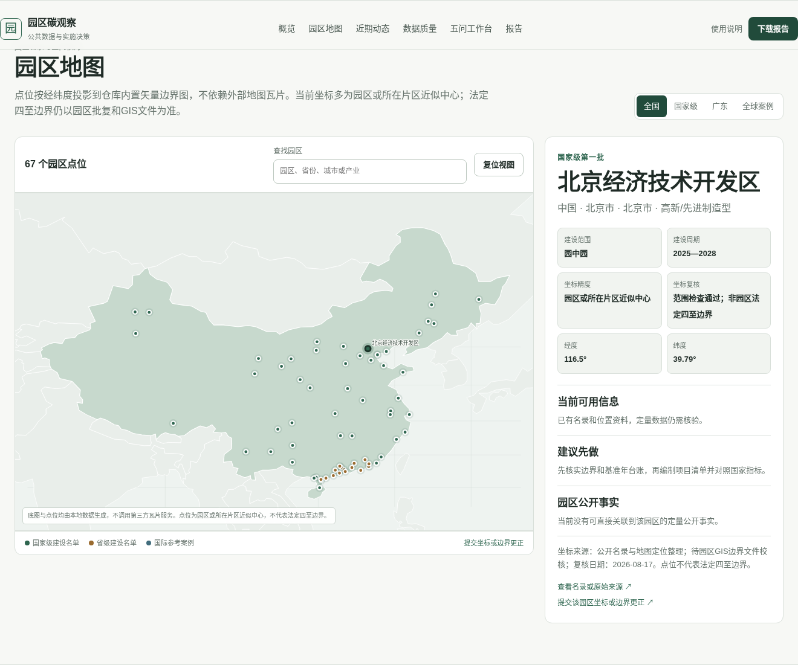

示范经济技术开发区零碳建设可行性初筛报告
结论：演示场景仅用于验证计算链路，不构成园区可行性结论
本结果属于前期筛查和项目排序，不替代法定节能审查、环评、接入系统审查、工程可研或投资决策。
本结果属于前期筛查和项目排序，不替代法定节能审查、环评、接入系统审查、工程可研或投资决策。


数据够不够
已填入演示数据，用于验证计算链路；正式使用仍需替换为园区原始台账
现状是什么
已形成同边界、同年度的排放基线
差距在哪里
已按国家试行指标形成差距表
| 指标 | 现状 | 目标 | 差距 | 状态 |
|---|---|---|---|---|
| 单位能耗碳排放 | 0.23 | 0.2 | 0.03 | 未达到 |
| 园区企业产出产品单位能耗 | 未达标 | 达到或优于二级能耗限额；不适用时说明 | — | 未完成判断 |
| 清洁能源消费占比 | 76.0 | 90.0 | 14.0 | 未达到 |
| 工业固体废弃物综合利用率 | 72.0 | 80.0 | 8.0 | 未达到 |
| 余热/余冷/余压综合利用率 | 38.0 | 50.0 | 12.0 | 未达到 |
| 工业用水重复利用率 | 70.0 | 80.0 | 10.0 | 未达到 |
怎么减
已按指标差距、产业适用性和实施前置条件形成措施清单；未取得项目参数前不填写确定减排量和投资额
| 类别 | 措施 | 对应差距 | 前置数据 | 责任方 |
|---|---|---|---|---|
| 基础改进型 | 蒸汽系统优化 | 单位能耗碳排放、园区企业产出产品单位能耗、余热/余冷/余压综合利用率 | 压力等级、凝结水、泄漏 | 热力运营方、用汽企业 |
| 基础改进型 | 蒸汽管网降压与凝结水回收 | 单位能耗碳排放、园区企业产出产品单位能耗、余热/余冷/余压综合利用率 | 压力、温度、流量、回水率、泄漏率 | 热力运营方、用汽企业 |
| 基础改进型 | 低浴比染色与废水余热回收 | 单位能耗碳排放、余热/余冷/余压综合利用率、工业用水重复利用率 | 浴比、水温、流量、回收温差 | 热力运营方、用汽企业 |
| 条件实施型 | 热储能/冷储能 | 单位能耗碳排放、余热/余冷/余压综合利用率、园区企业产出产品单位能耗 | 负荷曲线、储能损失 | 热力运营方、用汽企业 |
| 基础改进型 | 真空系统集中化与变频控制 | 单位能耗碳排放、园区企业产出产品单位能耗 | 真空度、流量、负荷曲线 | 园区管委会、相关设施运营方和实施企业 |
| 专项论证型 | 工业余热梯级利用 | 单位能耗碳排放、余热/余冷/余压综合利用率、园区企业产出产品单位能耗 | 温度、流量、时间匹配 | 热力运营方、用汽企业 |
| 专项论证型 | 数据中心余热外供 | 单位能耗碳排放、余热/余冷/余压综合利用率、园区企业产出产品单位能耗 | 水温、热量、距离、热用户曲线 | 能源运营方、供热企业、用热企业 |
| 基础改进型 | 压缩空气系统优化 | 单位能耗碳排放、园区企业产出产品单位能耗 | 压力、流量、泄漏、负荷 | 重点用能企业 |
| 基础改进型 | 高效电机与变频 | 单位能耗碳排放、园区企业产出产品单位能耗 | 功率、运行小时、负荷率 | 重点用能企业 |
| 条件实施型 | 高温热泵 | 单位能耗碳排放、园区企业产出产品单位能耗、清洁能源消费占比 | 热源温度、供热温度、COP | 能源运营方、供热企业、用热企业 |
| 条件实施型 | 精馏热集成/热泵精馏 | 单位能耗碳排放、园区企业产出产品单位能耗、清洁能源消费占比 | 塔顶/塔釜温度、回流比 | 园区管委会、相关设施运营方和实施企业 |
| 条件实施型 | 工业共生供需匹配 | 单位能耗碳排放、园区企业产出产品单位能耗、工业固体废弃物综合利用率 | 供需量、品质、距离、时间 | 热力运营方、用汽企业 |
花多少钱
已形成预算约束下的项目组合
入选投资：19,000.00万元 年减排：52,800.00tCO₂ 目标缺口：0.00tCO₂/年
| 项目 | 投资/万元 | 年减排/tCO₂ | 年净收益/万元 | 参数证据 |
|---|---|---|---|---|
| 蒸汽管网与凝结水回收 | 3600.0 | 12500.0 | 1200.0 | 演示参数 |
| 空压系统优化 | 1600.0 | 5200.0 | 695.0 | 演示参数 |
| 高效电机与变频改造 | 2800.0 | 8600.0 | 1090.0 | 演示参数 |
| 工业余热梯级利用 | 9800.0 | 24000.0 | 1390.0 | 演示参数 |
| 分级计量与能碳管理基础 | 1200.0 | 2500.0 | 340.0 | 演示参数 |
关键参数敏感性
| 情景 | 投资/万元 | 年减排/tCO₂ | 年净收益/万元 | 回收期/年 |
|---|---|---|---|---|
| 保守情景 投资上浮15%，节省下降20%，运维上浮10%，减排下降10% | 21850.0 | 47520.0 | 3429.0909 | 6.372 |
| 基准情景 按当前录入参数 | 19000.0 | 52800.0 | 4715.0 | 4.03 |
| 改善情景 投资下降5%，节省上升10%，减排上升5% | 18050.0 | 55440.0 | 5186.5 | 3.48 |
关键风险
| 维度 | 等级 | 发现 | 后续动作 |
|---|---|---|---|
| 示范数据 | 高 | 当前排放、指标和项目经济参数用于验证计算链路，并非某个园区的正式台账 | 用同边界、同年度的原始台账、报价和测量验证参数替换后重新运行 |
| 数据与边界 | 低 | 正式核算门槛字段已提供 | 继续保留原始凭证、因子版本和复核记录 |
| 绿电实践 | 中 | 源荷匹配、网架、计量结算或责任边界未全部确认 | 绿电直连仅作为条件实施型路径，先开展负荷曲线与接入条件专项核查 |
| 项目参数 | 中 | 8个项目仍使用指南级或未核验参数 | 取得供应商报价、能量平衡、节能量测量与验证边界后再转为投资建议 |
| 标准差距 | 中 | 6项指标仍有差距或缺数据 | 按核心指标优先、引导指标分项推进 |